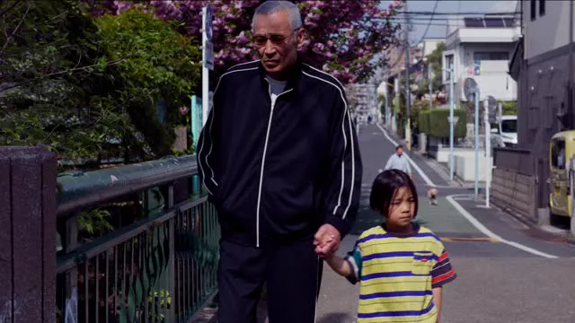
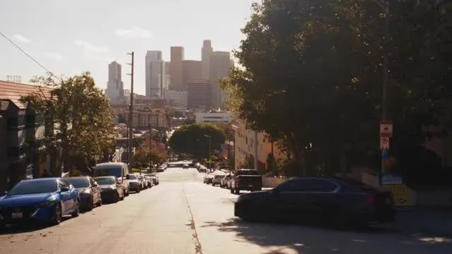

Selected workSound design and mixing for ads, brands and films
Selected professional work: commercials, branded films, short films and documentaries. From location sound to the final mix, these are some of the projects I have worked on. Need the same for your project? See services.
Brands & commercials
-
Branded film · Xbox
Cyprien: “Pourquoi je ne vous ai jamais parlé de mon frère”
Xbox, Forza Horizon 6 partnership
Recorded in Japan, sound editing, sound design, mix
-
Commercial
Rolex: “Reach for the Crown”
Launch film with Coco Gauff
Sound design, editing, mix
-
Commercial
Betclic: “Et le sport se vit plus fort”
Sound design, editing, mix
-
Commercial
ESCP Business School: “It All Starts Here”
Sound design, editing, mix
-
Commercial series · 3 episodes
Pascal le Grand Frais
Sound design, editing, mix
-
Commercial
Changan
Music and sound design

Films & documentaries
-

Short film
MOKUNIN
Oscar-qualifying, HollyShorts Film Festival
Recorded in Japan, sound editing, sound design, mix
On the festival circuit
-

Short film
Ice Ice Bye Bye
Anthropocene Prize, River Film Festival
Sound editing, sound design, mix
On the festival circuit
-
Documentary
En roues libres
Sound editing, mix
Also credited
- Chanel – Comètes Collective · Sound editing, mixing & sound design
- Major sporting event campaign, Paris 2024 · Sound editing, mixing & sound design
- Yoroï · Feature film · Sound design
- Comment ratatiner ? · Animation · Sound design
Need this for your project? Sound design · Mixing · Original music · Sound for ads
 SCRATCHMy sound design series, 3.4M+ viewsFamous sounds, rebuilt from everyday objects.
SCRATCHMy sound design series, 3.4M+ viewsFamous sounds, rebuilt from everyday objects.